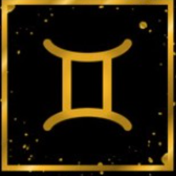

Aquarius
Aquarius Dates: January 20 - February 18
Description
Aquarius people are advanced, self-reliant, clever, exceptional, and optimistic. Air is their elemental sign. Aquarians, like air, lack a distinct form and appear to resist classification. Others are enthusiastic and active, while other Aquarians are calm and sensitive.

Lucky element:
- Lucky number: 3
- Lucky color: Blue
- Lucky Day: Wednesday
- Lucky stone: Tourmaline
Match Zodiac

Libra

Leo

Gemini
Strength
Aquarius advocates freedom, full of humane spirit, wide interest, full of creativity, willing to discover the truth, forward-looking, with rational wisdom, independence, personal style, willing to help others, loyal to their feelings, strong curiosity, independence, fraternity, Friendly, loyal, reliable, creative, farsighted, wise, innovative, sharp-minded, observant, and full of reform spirit.
Weakness
Aquarius lacks enthusiasm, thinks too idealistically, does not follow the card, breaks the casserole and asks to the end, believes too much in their own judgments, changes in thoughts, has no perseverance, is difficult to put the heart to friends, overemphasizes the autonomy of life, and likes a lot Nosy, too sensible, lack of taste, weird personality, overly persistent, unconventional, easy to exaggerate, stubborn, clingy, unconscious, overly idealistic, stubborn, extreme, rebellious, unsocial.